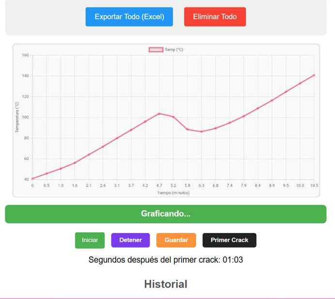
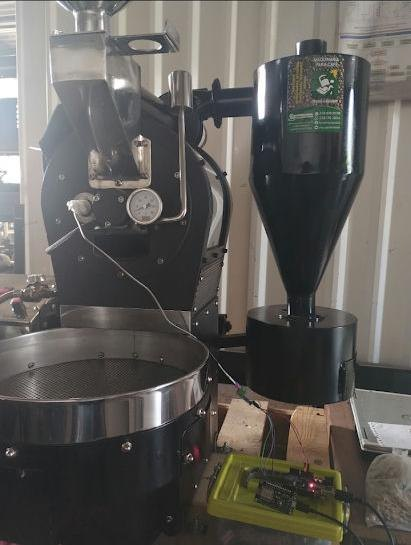
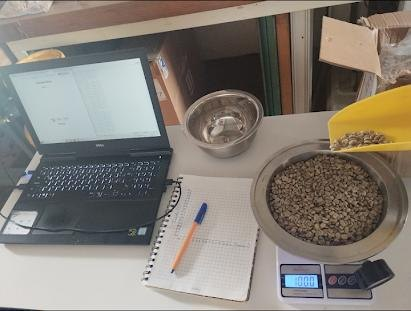
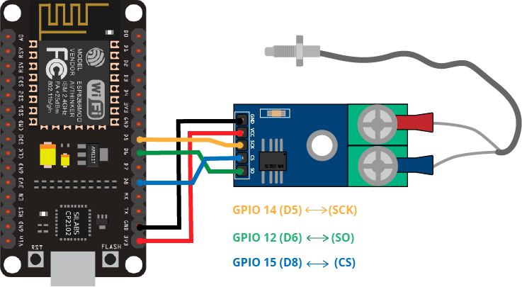

Caso principal
Monitoreo del tueste de café con IoT
Desarrollé un sistema para registrar temperatura y tiempo durante el tueste de café y visualizar las curvas desde una aplicación web. El proyecto integró sensores, firmware y una interfaz para consultar y exportar las sesiones.
El problema
El registro manual de las temperaturas dificultaba conservar y consultar la información de cada sesión. El objetivo fue digitalizar el seguimiento del tueste mediante una solución accesible de monitoreo.
Mi aportación
- Integré el ESP8266 con un termopar tipo K y un módulo MAX6675 para capturar la temperatura.
- Desarrollé el firmware en C++ para leer el sensor y transmitir los datos.
- Implementé la interfaz web responsiva y las gráficas de temperatura con Chart.js.
- Guardé el historial de sesiones en LocalStorage y añadí la exportación de información.
- Realicé la integración y las pruebas durante sesiones de tueste.
Cómo funciona
- 01 Termopar tipo K + MAX6675 Captura la temperatura.
- 02 ESP8266 Lee el sensor y transmite por Wi-Fi.
- 03 WebSocket por Wi-Fi Mantiene el enlace con la interfaz.
- 04 Interfaz web Grafica, guarda y exporta.
Muestra las curvas de temperatura y tiempo.
Conserva el historial de sesiones en el navegador.
Almacena los archivos de la interfaz en el microcontrolador.
Funciones principales
- Visualización de temperatura y tiempo Curva de la sesión en la interfaz.
- Historial de sesiones Consulta de registros anteriores.
- Registro del primer crack con cronómetro Marca el momento y cuenta el tiempo transcurrido.
- Exportación a Excel e imágenes Descarga de datos y gráficas de la sesión.
- Acceso desde dispositivos móviles en la red disponible Interfaz responsiva desde la Wi-Fi local.
Un reto técnico
Durante las pruebas se presentaron lecturas inestables del termopar. Se trabajó en el filtrado de datos y en la estabilidad de la alimentación, validando el comportamiento durante pruebas de tueste.
Resultado
Se obtuvo un sistema funcional para visualizar y conservar registros digitales de las sesiones, con pruebas en un entorno real de tueste.
El alcance fue el monitoreo y el registro; el control automático de la tostadora no formó parte del proyecto.
Tecnologías
ESP8266 · C++ · MAX6675 · HTML · CSS · JavaScript · Chart.js · WebSocket · LocalStorage · SPIFFS
Chart.js pertenece a la interfaz del proyecto CENIDET; este portafolio no depende de esa librería.
Evidencia visual
Fotografías del montaje y capturas de la interfaz obtenidas durante la estadía.







